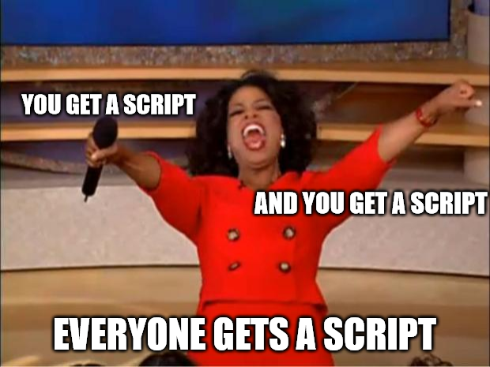

Many ancients believed time flies or flew, particularly the Romans, for whom Tempus fugit (“time flies”) was a well-known proverb. This year appears to be the embodiment of the proverb. It seems like only yesterday that WandaVision was released, but it has been a year in reality (is that a pun?! ). Let’s take a look back at the things that kept me entertained, and engaged throughout the year. Spoilers ahead.
Series
WandaVision
Wanda Vision was one of, if not the most, highly anticipated shows of the year, and it was well worth the anticipation. Wanda’s grief is touching, heartbreaking and is felt every episode.
“What is grief, if not love persevering?” ― Vision
This is such a beautiful, cathartic line, and Paul Bettany delivers it so well. Wanda, I believe, remembered this line when she opened Vison’s letter and had her catharsis, and thus created the hex, in my personal head-cannon. In my opinion, the Marvel Cinematic Universe shines brightest when it explores the very human aspects of superheroes, such as grief, sacrifices, and internal conflicts. The cherry on top is the action, fan service, and seeing comic book panels reimagined. Also, I am glad Mephisto did not show up because the fan theories were quickly spiraling out of control, with consequences felt in Loki as well.
The Falcon and The Winter Soldier
This series was a bit of a letdown. The “Villains,” aka “The Flag Smashers,” had weak motivations and even worse execution. This was most likely due to COVID’s tampering with the production, resulting in a weak script. The opening scene with Bucky and Ayo is the most heartfelt of any Disney+ show. Bucky, Zemo, and Sam had fantastic chemistry. Also, this won’t be a review without mentioning:

John Walker, played by Wyatt Russell, had the most realistic reaction to the super soldier serum. Obviously, someone who has witnessed the horrors of war and suffers from some level of PTSD is not a good candidate for the serum.
“The serum amplifies everything that is inside, so good becomes great, bad becomes worse.” ― Abraham Erskine
However, this only exemplifies the weak script, as none of The Flag Smashers experienced any side effects 🤷.
Loki
This was an unexpected ride, to say the least. From Loki realizing his true “glorious purpose,” to him falling for his variant, to realizing Time Keepers are a charade, to finally meeting The One Who Remains, aka Kang the Conqueror. Jonathan Majors' portrayal of The One Who Remains stole the show; his calm, stoic demeanor was relatable in some ways. Classic Loki creating a massive illusion of Asgard and exclaiming “glorious purpose” has to be the best scene. Finally, the setup for the multiverse of madness (hopefully) was just the icing on the cake.

Hawkeye
Well, this was a pretty grounded series. Clint is slowly losing his hearing, which obviously he would insert combat flashback montage. Kate is a fascinating character who is deserving of Hawkeye’s successorship. I couldn’t stop laughing at the scenes with the LARPers, and the hilarious exchange between Kate and Tomas (Tracksuit thug) about his relationship. I wasn’t expecting the Yelena plotline to end up the way it did, but Kate and her chemistry made it all worthwhile. Finally, Kingpin was introduced to the MCU, now attempting to reclaim the power he once possessed before the snap.
What If…?
This is a dark, sometimes lighthearted, anthology that reimagines a number of key events from the films in novel ways. Some things, however, cannot be changed, as Dr. Strange learned the hard way. We also saw Ultron’s true potential, as he achieved Tony’s goal of “Peace in Our Time,” then had an existential crisis, realized the presence of Uatu (The Watcher), and decided to create “Peace in Everyone Else’s Time”. Classic Ultron move. Perhaps Annihilation Conquest will be adapted for the MCU at some point? I’m optimistic.
How to Get Away with Murder
Oh boy, where do I even begin? This series had me hooked. It is bleak, and, like Silicon Valley, things are constantly going wrong. Although the legal accuracy was questionable, the script and acting were excellent. Do not even get me started on the plot twists; there were so many, and they all made sense :dizzyface:. My biggest gripe is that they killed Wes, who did not deserve to be killed. However, there was a silver lining for me in the ending, as Wes and Laurel’s son looks exactly like Wes, because they are both played by the same actor _dun dun dun…
Upload
Upload can be simply summarized as, “What if Facebook’s (now Meta) Metaverse was an actual thing”. The plot is simple: in this universe, your conscience is uploaded to a virtual afterlife when you die. However, not everyone can afford this afterlife (You do not say!), so the protagonist, Nathan, in a typical good guy plot, created a cheap alternative to this technology, for which he was murdered (or was he?!). Without going into too much detail, I strongly recommend you to watch this series and look forward to the upcoming seasons, as it appears to be very promising.
Young Sheldon
I will say it right away: Sheldon is a terrible character. A man of such intelligence should not have to struggle with social norms. Throughout the series, he has flatly rejected books that would have taught him how to do better in this area. That sounds a little forced. The supporting cast, however, is Young Sheldon’s saving grace, as they are excellent and far more interesting than Sheldon himself. As the seasons progress, the supporting cast will pique your interest more than Sheldon himself. I have to mention a few characters, especially Dr. John Sturges, who is always cheerful and treats Sheldon as an equal, except when he goes too far, which he does. You have to feel sorry for George Sr.; he does so much for his family and yet is treated so poorly. And how could I leave out Professor Boucher, the man who broke Sheldon, showed him his place, and instilled in him a deep hatred for engineers. Honorable mention: the banter between George Sr., and Coach Wilkins is gold.

The Witcher
I do not have much to say about this one; Henry is fantastic as Geralt, and the rest of the cast is, for the most part, equally so. The script has a few flaws, or many if you visit r/Witcher , but with my limited Witcher knowledge, it is a fun casual watch. The Witcher universe is intriguing, and the lore nerd in me will most likely explore it further in the near future. Should I play the games? Probably.
Invincible
What’s up with Amazon making such dark, gritty and graphic stories (points at The Boys). Invincible has a simple premise, almost to the point of being a parody of the DC universe, but it isn’t. There are some obvious parallels, but those parallels meet their demise in the first episode (Press F to pay respects). Mark (son of Nolan, a Viltrumite) learns about his lineage and what it entails as the show progresses. To avoid giving too much away about the plot, I recommend that you watch this series.
What We Do in the Shadows
What We Do in the Shadows is a mockumentary based on the lives of vampires attempting to adapt to modern times. It is a truly unique and hilarious show that depicts a wide range of situations that vampires face on a daily basis. Each character is well-written, with their own personality and set of abilities. Throughout the episodes, their naivety about the world and human behavior in general will have you laughing out loud. Nandor and Guillermo, stole the show for me, with their comic timing and bond. Guillermo’s plotline, in particular, is so ridiculous that it makes me laugh just thinking about it. This is yet another must-see recommendation from me, deserving of a once-a-year viewing.

Aaron Stone
What if the video game you played was real? Obviously, this show was one of my favorites as a kid; after all, who does not want to transform into their video game avatar and save the world? Technically, the show has not aged well, as it is only available in 480i resolution, and suffers from poor writing. All things considered, it has a good plot, and the stakes only get higher in the second season.
Godzilla Singular Point
This was a fascinating and suspenseful show. Looking at the title, it may appear that it is just another Godzilla show/film with monsters fighting monsters, but it is not; the story is actually Sci-Fi and is uniquely integrated with the Godzilla mythos. The beginning is a little slow, but the mysterious song, and the plot will captivate you (I still hear it in my head), and you will soon find yourself binge-watching the show to find out what happens next.
Others
- Boruto: Naruto went nuclear.
- One Punch Man: Better than expected.
- Blood of Zeus: The art style is beautiful.
- Spider-man Unlimited: Sadly it only lasted 13 episodes.
- Suite Life of Zack and Cody: It is still great, hilarious, and a must-watch.
- Lupin: The first season is fantastic, the plot is well-written, and Omar Sy is brilliant in the lead role.
Movies
Don’t Look Up
To be honest, I assumed this would be a serious film, and it took me far too long to realize it wasn’t. The pacing is excellent, as is the acting, which is not surprising given the A-list cast. The underlying depiction of our current state of society, media, government, human psychology, and the trap that is media and the accompanying fame, compelling one to sacrifice one’s morals, will be recognized by the majority of people. As a nihilist, the gradual shift into a parody is absolutely hilarious, but it may not be for you, and the film will leave you feeling uneasy and frustrated. Knowing it was written prior to COVID is unlikely to help in this regard. If you have not seen it yet, you should. Also, keep an eye out for the post-credit scenes.
Eternals
For me, Eternals was the best film of the year. The Eternals' aesthetics, as well as the Celestials' sense of scale, were a joy to behold. The lore surrounding the Eternals, particularly their history with Earth, drew me in deeply. The way the Eternals mythos was integrated with Earth mythos; Ikaris, the boy who flew too close to the sun, Thena, or Athena, the goddess of war, Makkari, Mercury, the god of speed, mischief, and thievery, all legends created by Sprite. The art design behind each Eternal’s powers is elegant and regal; the way the gold lines flow when they activate their powers, chef’s kiss. Although the plot with the deviants felt a little weak, the task of introducing and establishing so many characters was accomplished admirably. Many people agree with me; in fact, Eternals is the lowest-rated MCU entry, which makes me sad because it appears unlikely that there will be a sequel.
Spider-man: No Way Home
Ah yes, Spider-man, the most anticipated movie of this year, only to be ruined by spoilers everywhere. The film was a fitting conclusion to the MCU Spider-Man trilogy, depicting the origins of the Spider-Man we know and love, albeit with very serious, dark ramifications. At the very least, the Ironman Jr. rants will be over. The plot had a simple goal, to do justice to the famous quote:
“With great power there must also come—great responsibility!”
Which it did perfectly. The thing I was most excited about was Andrew’s Spider-Man, who was, in my opinion, the best Spider-Man. The scene where he caught MJ, finally finding closure for Gwen’s death, was touching. Hell, the whole 3rd act was touching, emotional, and brilliantly acted. You could feel Tom’s Spider-Man’s rage as he went all Hulk-smash on Goblin, but all I could think at the time was that if Goblin was not a super-solider, his head would fly off. The ending was simply depressing; Peter is now all alone, left to his own devices (bye bye stark tech spidey suit, say hello to ew new suit), no friends, no Avengers, not a faint memory of him. I wonder how this will be handled, and I hope it lasts. Also, clever editing Sony, sneakily recycling the transformation scenes of Sandman and The Lizard from previous movies.

Shang-Chi: The Legend of the Ten Rings
This was a lot of fun! In retrospect, changing the rings from infinity stone-like objects to a more practical, wrist-worn weapon was a brilliant decision. The action choreography was so engaging as a result of such a simple change that it almost felt like a dance, with the rings acting as an extension of the user. Throughout each action scene, the influence of Hong Kong filmmaking could be felt, and Shang-Chi even performed many of Jackie Chan’s iconic moves. After the whole Ironman 3 debacle, Mandarin is finally given his due. Tony Leung is captivating as the Mandarin. The characters are brilliantly written, and you can feel their chemistry and history in every scene. Even the one-off scenes are funny. I am looking forward to enjoying a sequel! Will they make any references to the original Makluan plot? I sincerely hope so.
Black Widow
This film was a bit disappointing, but it was still entertaining. I despised Taskmaster’s portrayal, and it completely ruined the film for me. The only saving grace was Taskmaster’s identity, which made sense and was well-suited to the plot. The addition of Natasha’s family to her character was fantastic. Alexei was one of the most amusing characters in the film, second only to Yelena. Dreykov was a clumsy pheromone-secreting Widow-repelling villain. To be honest, he should have been a super soldier himself; it seems silly that he was defenseless against his own Widows. The writers definitely backed themselves in a corner for the 3rd act, could have been much better.
Godzilla vs. Kong
It only took Warner Bros. two films to realize that there should be fewer human scenes and more monster scenes. The end result was chef’s kiss; the film was wild, and I enjoyed every minute of it. The additions to the lore, such as the Hollow Earth and monsters that arise from it, will aid in the expansion of the universe, which I am all for. We have a radioactive, atomic breath spewing lizard and a monke; it will end just as you expect, and it did, until they gave Kong an axe, forged by his kind using Godzilla’s dorsal fins. The ensuing brawl was as hilarious as it was wild. Not only did Godzilla smirk after badly burning Kong, Kong smacked the stupid lizard back with the axe, followed by recreating the meme:

Obviously, Kong and Godzilla cannot part on bad terms and must reconcile before the end of the film; thus, MechaGodzilla entered and quickly left in pieces.
Dune
This film was beautiful, overwhelming and full of rich lore, which was a perfect combination for me. I had no idea about the history of Dune or that it was an adaptation when I watched the movie. Dune faces the same challenges as all adaptations, condensing the rich texts that are books, and it not only does a good job, but it adds to them. I read somewhere that Denis Villeneuve’s original goal with this adaptation was to build and establish the world of Dune in the first film, and boy did he succeed. It is a cinematic masterpiece; some scenes are often drawn out, but they simply set the tone of the world of Dune and are so captivating that you will be compelled to read the books. So I did, and to my surprise, many such scenes did not appear in the books, yet they felt perfect. The cast, especially the Atreides family, is well-chosen and beautifully performed. If you are expecting a “complete” movie, you will be disappointed and probably irritated, as much is left unsaid and the film ends on a cliffhanger. But, alas, this is unquestionably a must-see.
Venom: Let there be Carnage
The plot is acceptable but unsatisfying, and the film is far too short. Carnage was Carnage until he was defeated and Venom devoured him. What. The spawn of a symbiote is always more powerful than the parent. This should not have been possible, but the plot requires it, so 🤷. Carnage did manage to leave a spawn, Toxin, which is fantastic. The post-credit scene with Venom informing Eddie about the symbiote hive mind was fantastic; perhaps the Knull King in Black storyline will be adapted in the future.
Free Guy
I went into the film with no expectations, assuming it would be similar to a video game adaptation, which are notoriously bad. I was, however, pleasantly surprised. It is crazy, but it is funny, and it is actually quite moving at times, making it a more heartwarming film than you might expect. Every scene in which Ryan Reynolds (Guy) or Taika Waititi (Antwan) appear is hilarious. Not to mention Channing Tatum, who is the in-game avatar of a typical gamer dude. Again, hilarious. It is highly entertaining, full of pop-culture references and easter eggs, and is a must-see once or many times.
Zack Snyder’s Justice League
My expectations were low after Joss Whedon and Warner Bros. ruined the original. The original was enjoyable, but it was lacking. Zack’s version is far superior and more cohesive than Joss'. The characters' motivations are clearer. The villain, Steppenwolf, benefited the most from this because he now had a clear, understandable goal. He wanted to go home, which was omitted in the original. Victor, who had little to no presence in the previous film, is now the heart of the film, and rightly so. Every out-of-place, out-of-character moment in the original was cut, which makes sense given that they were shot specifically for Joss' version. Batman joking about bleeding? Gone. Flash falling on Wonder Woman? Gone. Although the original did one thing better, it was the minor interaction between Batman and Flash, when Flash said he did not know how to fight, to which Batman replied, “Save One,” and Barry clearly understood. Concise and apt, as Batman should be. And, oh boy, Flash’s scene near the end gave me goosebumps; it was perfect and truly demonstrated the extent of Barry’s abilities. Unlike the original, where he pushed a car 🤦. Without a doubt, this is the superior version of Justice League. The real test would have been whether Zack could have delivered a similar experience with a shorter runtime. We will never know because Warner Bros. is not interested in Zack’s version of the DCEU.
Others
- Tomorrow War: Dumb movie, dumb plot, still entertaining.
- Underwater: Thrilling and entertaining, with Cthulhu cameo at the end.
- Mortal Kombat: A fine addition to Mortal Kombat media, great action with fatalities.
- Red Notice: Typical Netflix movie.
- The Witcher: Nightmare of the Wolf: Good art style, but becomes too anime-y with Witcher’s powers.
- Crazy Stupid Love: A classic, hilarious movie. Must watch.
- We are the Millers: Engaging, hilarious, and full of meme material.
- The Suicide Squad: Better than the original.
- IT Part I
- Friends Reunion
- No Time to Die
Games
Deep Rock Galactic
This game is worth its weight in gold (get it, cause dwarfs?). It is easy to use, has an intuitive design, and has a fun gameplay loop. Dwarfs are divided into four classes: Driller, Engineer, Gunner, and Scout. Each dwarf is well-rounded and has a synergy among them. This will become clear as you play the game. The game has a natural feel to it; I can not compliment the design enough. Not to mention the free, no FOMO, battle pass, which will keep you occupied for at least 100 hours. Remember to Rock-and-Stone, as well as buying beer for your fellow dwarfs.

Space Engineers
It is only natural for a Metallurgical and Materials Engineer to be drawn to a game like this. This is a sandbox game, similar to Minecraft, with extensive modding and scripting support, so the sky is the limit. I spent a lot of time building elaborate mining contraptions, iterating upon them, self-distributing mineral refiners, building ships, attacking hostiles, failing miserably, reloading the save, and repeating the process.
Far Cry New Dawn
Ignoring the fact that I skipped Far Cry: 5, this game takes a major departure from previous Far Cry games: it places a greater emphasis on RPG elements; the rest of the gameplay loop, however, is largely unchanged. The post-nuclear, fallout-like theme is appealing, as is the bright, vibrant color scheme. It is a short, sweet and fun game!.
Totally Accurate Battle Simulator
This is such a simple and enjoyable game; it reminded me a lot of the flash era of gaming, especially Age of War. During my exams, I was kept entertained by this game. Is it possible that I was playing the game when I should have been studying? Yes! 🙈
Warframe
Oh warframe, I can’t playeth thee nay longeth’r.
Development
Neovim
This year, I discovered the Vim (Neovim) ecosystem, and I am not going back to VSCode (sorry not sorry). In software development, there is a saying that you spend more time editing existing code/text than writing new code. Vim excels at editing, to the point where I would say it is unrivaled. It is a modal editor, which means you can do a lot of text manipulations without using your mouse. Vim makes creating LaTeX documents a breeze, which is why I migrated to it.
Hugo
This was the right place, the right time moment for me. I was considering creating a blog, and GitHub happened to recommend me Hugo’s repository. The rest, as they say, is history. Despite my lack of prior web-development experience, creating this blog has not been difficult. Web development has piqued my interest, and I intend to pursue it further.
Python
Python, how I adore and despise thee. In all seriousness, Python is a fantastic programming language. Multi-threading with ThreadPoolExecutor context manager is just chef’s kiss. I have written a lot of scripts this year! Batch optimize a PDF, download a presentation from slideshare, manage LaTeX assets automatically. Relevant xkcd.
Not to mention Grain Growth Simulator , which was surprisingly simple to implement, and Ternary Phase Diagram Simulator , which finally put my grasp of coordinate geometry to good use. Despite its slowness, Python’s ease of use makes it ideal for rapid prototyping, which is my primary use case.
GitHub
643 contributions made in 2021, 5.1x greater than 2020 🚀.
YouTube
- A Mere Creator
- Babish Culinary Universe
- Baumgarter Restoration
- Ben Awad
- Black Beard Projects
- Brick Technology
- Christ Centered Ironworks
- Cody’s Lab
- Corridor Crew
- DIY Perks
- Doctor Mike
- Ethan Chlebowski
- Fireship
- Hugh Jeffreys
- Koss
- Linus Tech Tips
- Miziziziz
- NileRed
- Odd Tinkering
- Stuff Made Here
- The Thought Emporium
- Tyrell Knifeworks
- Veritasium
- mCoding
Music
According to Spotify, I spent 44,975 hours listening to music. Noice.
Top songs:
- 4ever Falling: Take My Yes As a No
- parisse - 25
- Aaryan Shah - Stive Alive
- KAVI - Worst
- Maluma, The Weeknd - Hawai Remix
Top artists:
- Always Never
- Aaryan Shah
- 4ever Falling
- Nuages
- The Weeknd
Academics
I had a pretty boring lot of subjects this semester, but physical metallurgy and composite materials were enjoyable. I was dumbfounded when I realized that niobium and columbium are the same element; IGC will never leave me alone.